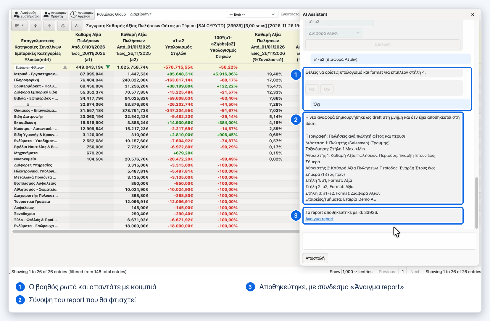
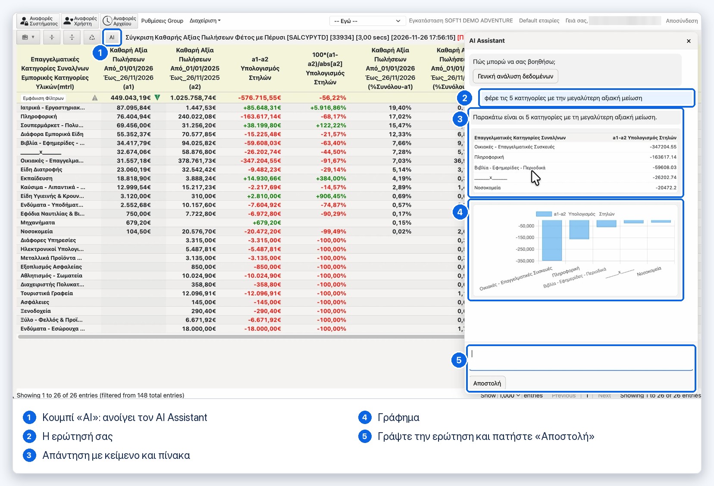

AI Assistant: ρωτήστε την αναφορά σας
Μέσα σε κάθε αναφορά υπάρχει βοηθός AI. Του κάνετε ερωτήσεις σε απλά ελληνικά και απαντά με κείμενο, πίνακα ή γράφημα. Μπορεί και να σας φτιάξει νέα αναφορά.
Τι κάνει#
- Απαντά σε ερωτήσεις για τα δεδομένα της αναφοράς που έχετε ανοιχτή, π.χ. «ποιοι 10 πελάτες έπεσαν περισσότερο;», «πόσο πούλησε το είδος Χ;».
- Κάνει γενική ανάλυση με ένα κουμπί: Γενική ανάλυση δεδομένων.
- Δείχνει τα αποτελέσματα ως κείμενο, πίνακα ή γράφημα.
- Ρωτά όταν κάτι δεν είναι σαφές. Σας δίνει επιλογές με κουμπιά ή λίστες, π.χ. ποιον αθροιστή, ποια περίοδο, ποιες εταιρείες.
- Φτιάχνει νέα αναφορά από την περιγραφή σας και την αποθηκεύει μόνο αν το επιβεβαιώσετε.
Πότε το χρησιμοποιώ#
Ο Sales Manager έχει ανοιχτή την αναφορά πωλήσεων ανά πελάτη. Αντί να φιλτράρει και να ταξινομεί, γράφει: «Δείξε μου τους 5 πελάτες με τη μεγαλύτερη πτώση φέτος». Παίρνει αμέσως πίνακα και γράφημα.
Βήματα#
- Τρέξτε μια αναφορά.
- Πατήστε AI στη γραμμή κουμπιών πάνω αριστερά. Ανοίγει το παράθυρο συνομιλίας AI Assistant: «Πώς μπορώ να σας βοηθήσω;».
- Γράψτε την ερώτησή σας και πατήστε Αποστολή. Ή πατήστε Γενική ανάλυση δεδομένων.
- Αν ο βοηθός σας ρωτήσει κάτι, διαλέξτε από τις επιλογές που δίνει και επιβεβαιώστε.
- Για νέα αναφορά, περιγράψτε τι θέλετε (π.χ. «πωλήσεις ανά πωλητή φέτος και πέρυσι»). Όταν σας προτείνει την αναφορά, πατήστε Ναι, αποθήκευσε το report.
-
Θα δείτε «Το report αποθηκεύτηκε με id: …» και τον σύνδεσμο Άνοιγμα report.

Ο βοηθός αποθηκεύει νέο report («Το report αποθηκεύτηκε με id…»)
Το παράθυρο μετακινείται με σύρσιμο και κλείνει με το Χ.

Τι δεδομένα χρησιμοποιεί#
- Ο βοηθός δουλεύει μόνο πάνω στα αποτελέσματα της αναφοράς που έχετε ανοιχτή. Αυτά έχουν ήδη περάσει από τα δικαιώματά σας. Δεν ψάχνει ελεύθερα στη βάση του SoftOne.
- Για να απαντήσει, χρησιμοποιεί εξωτερική υπηρεσία τεχνητής νοημοσύνης.
- Ανωνυμοποίηση (έρχεται σύντομα): πριν σταλούν στην υπηρεσία AI, τα ονόματα (π.χ. επωνυμίες πελατών, ονόματα ειδών, πωλητών, αθροιστών) θα αντικαθίστανται με κωδικούς. Η υπηρεσία θα βλέπει, για παράδειγμα, «η τιμή [D35003_3000123] είχε 10.000 στον αθροιστή [R1010040]», όχι το όνομα του πελάτη. Τα ποσά και οι ημερομηνίες θα στέλνονται όπως είναι. Στην απάντηση που βλέπετε εσείς θα εμφανίζονται τα πραγματικά ονόματα.
Συμβουλές και συχνά λάθη#
- Ρωτήστε για ό,τι υπάρχει στην αναφορά. Αν η αναφορά δεν έχει τα περσινά νούμερα, ο βοηθός δεν μπορεί να συγκρίνει με πέρυσι. Προσθέστε πρώτα τον αθροιστή ή ζητήστε του να φτιάξει νέα αναφορά.
- Πείτε ονόματα όπως τα ξέρετε. Ο βοηθός ψάχνει και με μέρος του ονόματος.
- Ελέγχετε πάντα τα νούμερα με τον πίνακα της αναφοράς, ειδικά πριν τα στείλετε παραπέρα.
- «Δεν έλαβα απάντηση από το σύστημα σε αυτόν τον γύρο». Πιθανό προσωρινό πρόβλημα. Ξαναστείλτε το μήνυμα.
Σας βοήθησε αυτό το άρθρο;